先建立层级，再设计画面。
把店铺内容拆成品牌入口、场景分类、活动转化和单品延展四级，先明确每张图的任务，再决定信息量与视觉强度。
LEMORELE · FLAGSHIP STORE CAMPAIGN SYSTEM
围绕品牌升级、产品分类与营销转化，建立一套能在首页、活动会场和单品入口之间稳定延展的旗舰店视觉语言。
CREATIVE LOGIC / 创作思路
这次旗舰店改版面对的不是一张主视觉，而是多品类、多用途和多语言页面如何保持统一。我的处理方式，是先建立稳定的品牌底色与信息秩序，再根据产品线改变场景和光线，让每张 KV 都有独立卖点，同时仍能被识别为同一个品牌。
把店铺内容拆成品牌入口、场景分类、活动转化和单品延展四级，先明确每张图的任务，再决定信息量与视觉强度。
延续冰蓝底色、模块化台面、轻量科技装置与品牌蓝按钮，让图传、拓展坞和家用产品共享同一套视觉语法。
标题、卖点、价格与按钮都有稳定落点；画面可替换产品、语言和活动信息，兼顾品牌感与后续上新效率。
首屏不急于塞满商品，而是以蓝白品牌色、轻量三维装置和产品组合建立“连接更多可能”的科技感。三版画面保持同一结构，只调整产品站位与空间密度，为轮播切换保留连贯性。
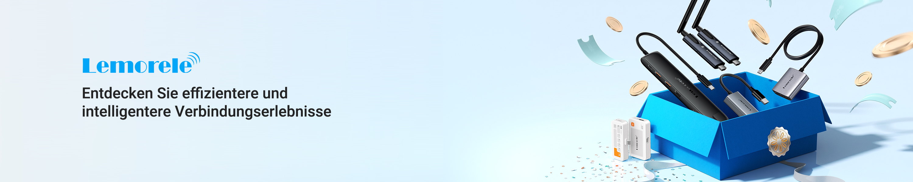
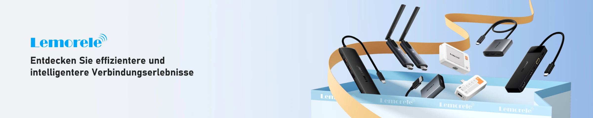
不同产品线不再依赖名称堆叠，而是用会议桌、家庭空间、专业监看和模块化陈列建立快速识别。统一标题位置、产品比例和按钮样式，使六个入口在变化中保持秩序。

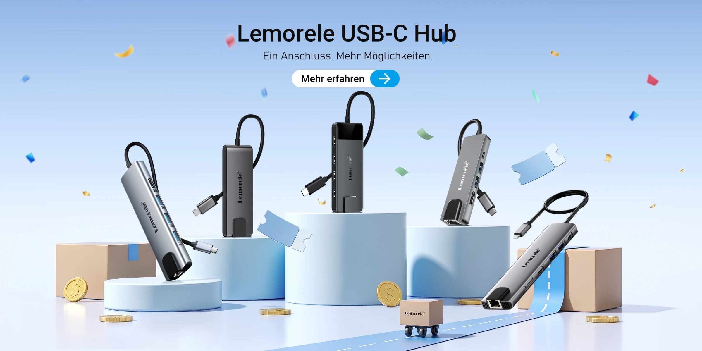
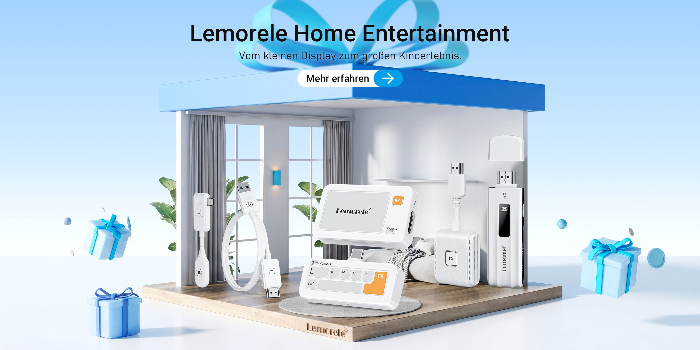
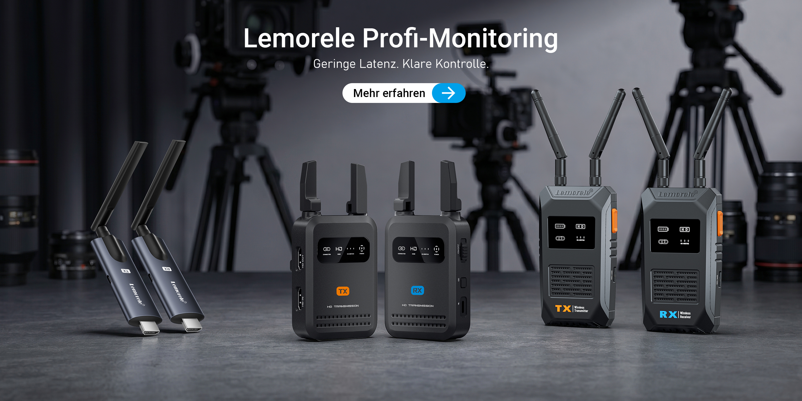
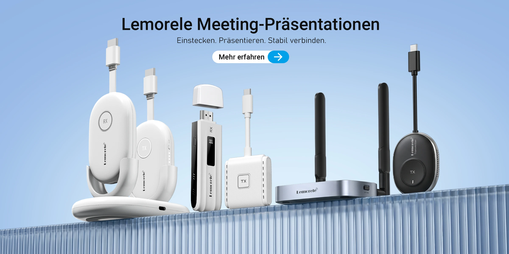
稳定标题区、产品视觉中心和行动按钮；将颜色、道具与光线作为可变层，从而提升后续上新与多语言适配效率。
主推款强调场景价值，折扣合集强调价格与选择效率，会员日则强化权益感。三种任务采用不同信息密度，但都保留清晰标题、聚焦产品和明确行动入口。
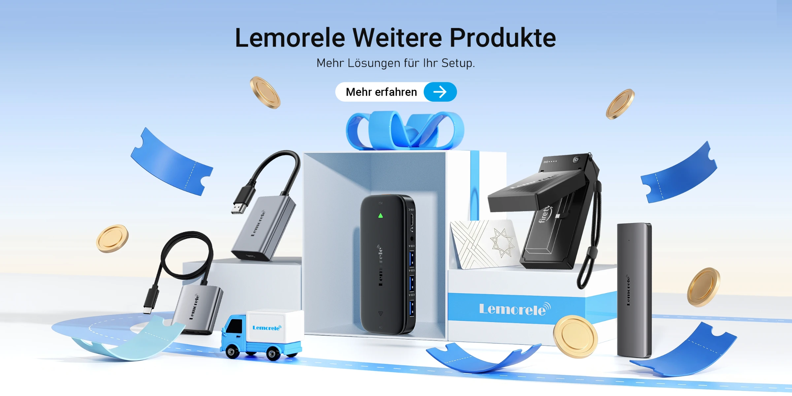
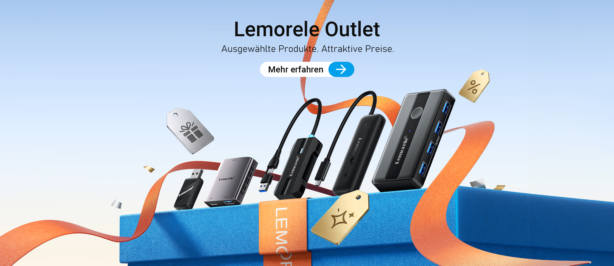
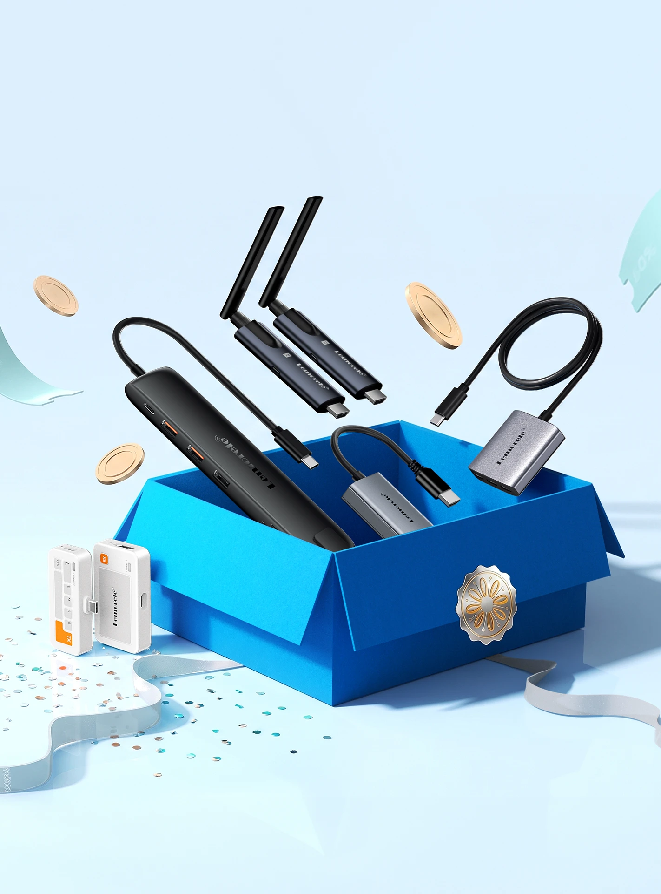
单品页允许更强的功能场景与视觉情绪，但仍延续克制标题、产品主角位和清晰信息落点。这样用户从旗舰店入口进入商品页时，视觉体验不会断裂。
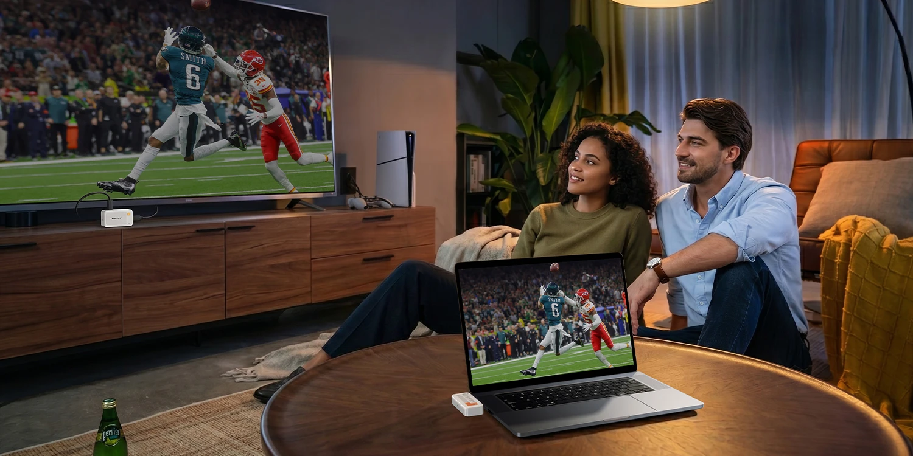
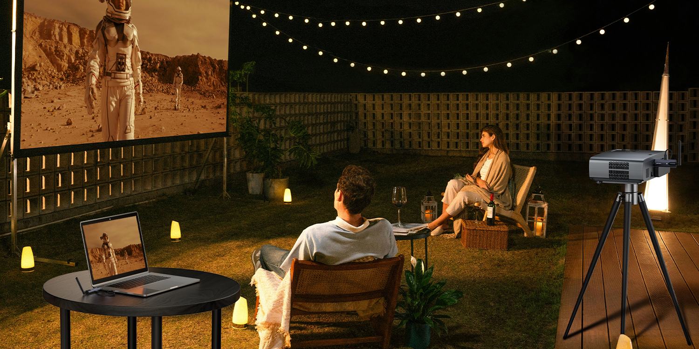
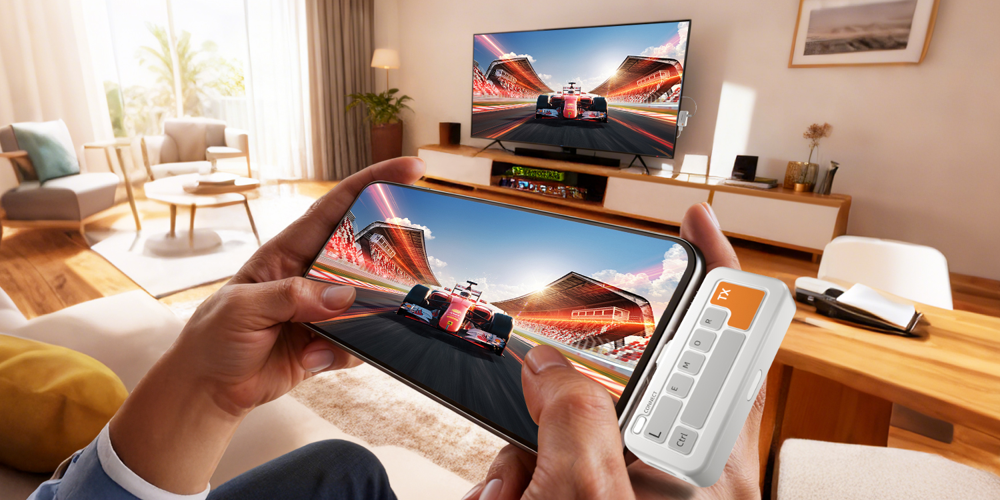
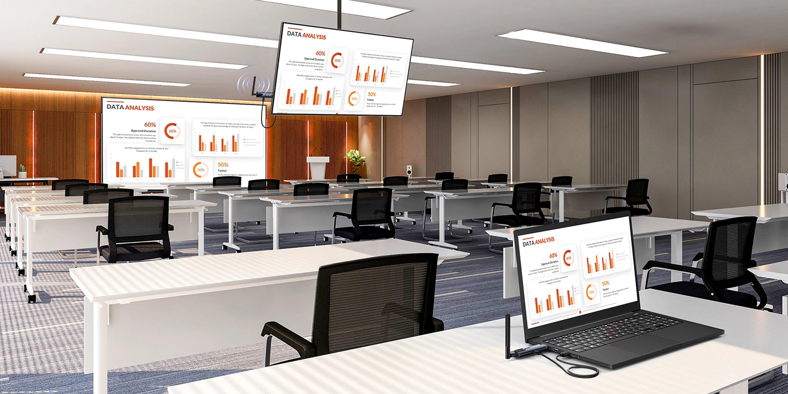
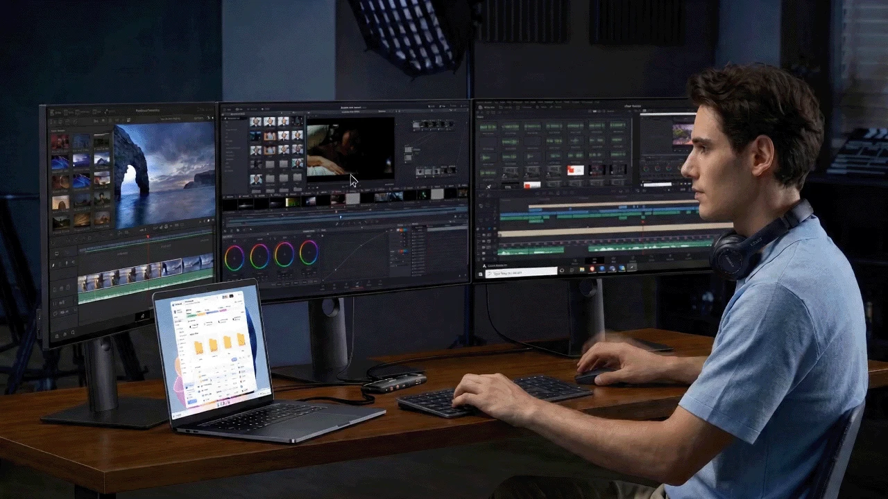
单品图允许更强的情绪和功能表达，但产品仍占据主视线，标题、卖点与行动入口保持清晰，延续旗舰店的品牌体验。
品牌故事负责解释“我们是谁”，绿色排碳负责说明“我们相信什么”。两组 KV 都控制在轻量、可信的表达里，用场景、图标和事实信息替代空泛口号。
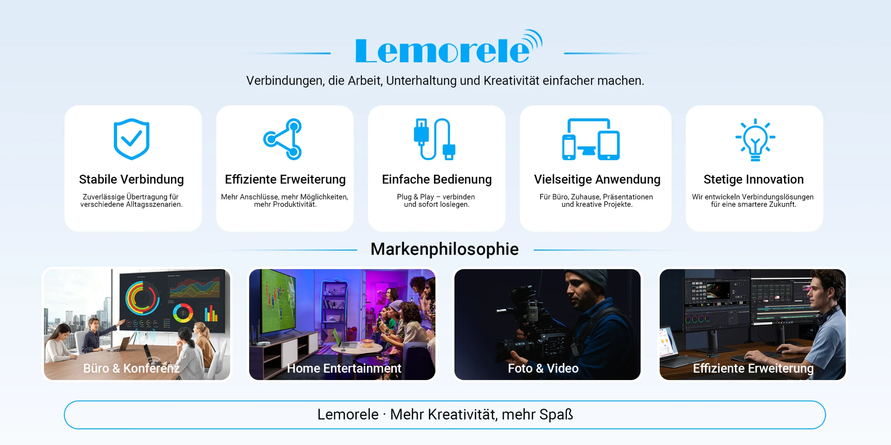
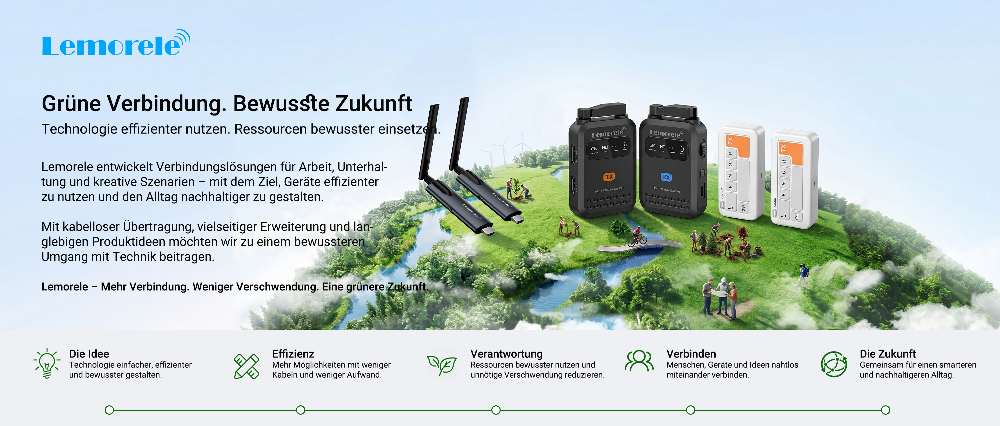
DESIGN OUTCOME / 项目总结
这套旗舰店 KV 的重点不在于统一成同一张脸，而在于建立可复用的设计判断：品牌入口要克制，分类入口要清楚，活动页面要有转化力，单品场景要说清价值。最终让不同时间、不同产品和不同语言的内容，都能持续生长在同一套品牌系统中。